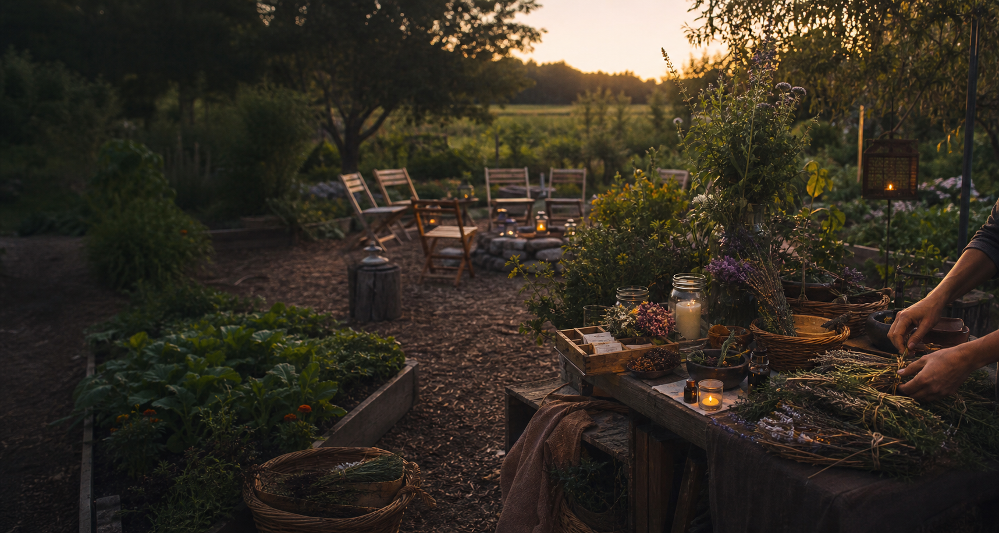

Mindvalley Events
Personal growth summits and global speaker programming.
May 16, 2026 · Virtual and in-person
Now gathering founding members
An emerging private membership community for awakening, channeling, higher-self work, manifestation, energy healing, spiritual growth, and people building a more magical, conscious world together.
Find your people
Start with a few broad, travel-friendly, or online gatherings. Open the directory if you want more.
Personal growth summits and global speaker programming.
May 16, 2026 · Virtual and in-person

National / expoHolistic expo energy with exhibitors and wellness audiences.
June 5, 2026 · Regional travel event
Workshops, cruises, and wider Law of Attraction programming.
May 16, 2026 · Online and travel-based
Start here
People can browse the public preview, read a short journal note, or request membership when they want the private side of the association.
Browse public listings and events.
Open directorySee the quick site overview.
Read journalStep into the private side.
Request membershipDirectory preview
The homepage keeps the preview short. The directory carries the fuller search and location tools.
Travel-friendly and online dates.
Open the directory for the fuller search.
Directory
The directory can use location if you allow it, or you can browse without sharing anything and still see useful public results.
Journal
The journal can hold short public notes, but the homepage only needs one sample entry to show the tone.
A quick introduction to the directory, events, and private membership path.
Membership
Membership is the private doorway into Mystery School of Mother Earth. The public site shows the mission, the directory, the journal, and the events that are beginning to surface. Membership is where people step in more fully, connect through the association, and take part in the member side of the community as it grows.